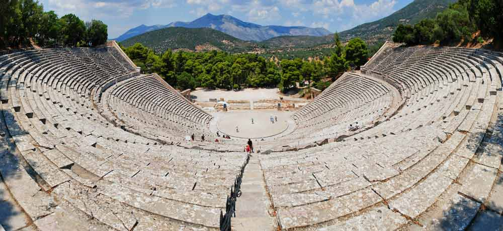

Descubre la maravilla de viajar por el mundo. ¡Haz clic para obtener más información!
Grecia
Grecia es Atenas, posiblemente una de las ciudades más fascinantes del mundo, pero también es Delfos, Corinto, Micenas, Epidauro, Olimpia,
y un sin fin de islas a cada cual más bonita.
Atractivos Turísticos

-
Santorini
-
Atenas
-
El Peloponeso
-
Delfos y su Oráculo
-
Monasterios de Meteora
Itinerario
Día 1: Atenas
Atenas, se merece un viaje para ella sola, nunca debería faltar en cualquier viaje a Grecia.
Día 2: El Peloponeso
El Peloponeso, nos sumergiremos en la historia. Leer más
Día 3: Delfos y su Oráculo
Delfos y su Oráculo, igual que atrajo a miles de personas hace casi 3.000 años. Leer más
Día 4: Santorini
Santorini, te cautivará por el ambiente con las casas blancas con cúpulas azules.
Día 5: Monasterios de Meteora
Los monasterios de Meteora, flotando en las alturas dibujan uno de los paisajes más singulares y llamativos del mundo.